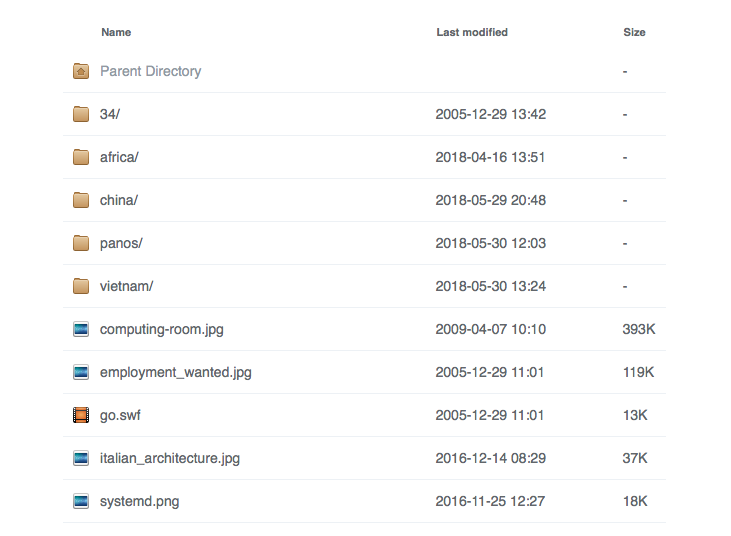

In this post, the techniques of the previous posts are combined for pretty directory listings. Most of the heavy lifting is done in the browser, requiring only static files on the server.
Out-of-the-box Apache directory listings still have that minimalist oh-so-90s look. You can do better than that.
Ingredients
For elegant listings, get Apaxy. It uses the beautiful Faenza icon theme:
cd /usr/local/share ; git clone https://github.com/oupala/apaxy.git
It looks like this: 
Configuration
Next, add this to /etc/apache2/options/apaxy.conf. It is an edited copy of /usr/local/share/apaxy/apaxy/htaccess.txt with bits taken from /usr/local/share/apaxy/apache-config.conf:
# Apaxy by @adamwhitcroft
#
# For a full breakdown of the mod_autoindex module:
# http://httpd.apache.org/docs/2.4/mod/mod_autoindex.html
Alias /.apaxy /usr/local/share/apaxy/apaxy/theme
<Directory /usr/local/share/apaxy/apaxy/theme/>
Require all granted
Options none
Include options/expires.conf
Include options/nolog.conf
</Directory>
<IfModule mod_autoindex.c>
# INDEX OPTIONS
IndexOptions +Charset=UTF-8 +FancyIndexing +IgnoreCase +FoldersFirst +XHTML +HTMLTable +SuppressRules +SuppressDescription +NameWidth=* +IconsAreLinks
# META VIEWPORT
IndexHeadInsert "<meta name=\"viewport\" content=\"width=device-width, initial-scale=1\" />"
# HIDE STUFF
IndexIgnore ".??* *~ *# HEADER* README* RCS CVS *,v *,t"
# GENERAL ICONS (BLANK, DIRECTORY, PARENT DIRECTORY)
AddIcon /.apaxy/icons/blank.png ^^BLANKICON^^
AddIcon /.apaxy/icons/folder.png ^^DIRECTORY^^
AddIcon /.apaxy/icons/folder-home.png ..
AddIconByType (TXT,/.apaxy/icons/text.png) text/*
AddIconByType (IMG,/.apaxy/icons/image.png) image/*
AddIconByType (SND,/.apaxy/icons/audio.png) audio/*
AddIconByType (VID,/.apaxy/icons/video.png) video/*
# EXTENSION SPECIFIC ICONS
AddIcon /.apaxy/icons/archive.png .7z .bz2 .cab .gz .tar
AddIcon /.apaxy/icons/audio.png .aac .aif .aifc .aiff .ape .au .flac .iff .m4a .mid .mp3 .mpa .ra .wav .wma .f4a .f4b .oga .ogg .xm .it .s3m .mod
AddIcon /.apaxy/icons/bin.png .bin .hex
AddIcon /.apaxy/icons/bmp.png .bmp
AddIcon /.apaxy/icons/c.png .c
AddIcon /.apaxy/icons/calc.png .xlsx .xlsm .xltx .xltm .xlam .xlr .xls .csv
AddIcon /.apaxy/icons/cd.png .iso
AddIcon /.apaxy/icons/cpp.png .cpp
AddIcon /.apaxy/icons/css.png .css .sass .scss
AddIcon /.apaxy/icons/deb.png .deb
AddIcon /.apaxy/icons/doc.png .doc .docx .docm .dot .dotx .dotm .log .msg .odt .pages .rtf .tex .wpd .wps
AddIcon /.apaxy/icons/draw.png .svg .svgz
AddIcon /.apaxy/icons/eps.png .ai .eps
AddIcon /.apaxy/icons/exe.png .exe
AddIcon /.apaxy/icons/gif.png .gif
AddIcon /.apaxy/icons/h.png .h
AddIcon /.apaxy/icons/html.png .html .xhtml .shtml .htm .URL .url
AddIcon /.apaxy/icons/ico.png .ico
AddIcon /.apaxy/icons/java.png .jar
AddIcon /.apaxy/icons/jpg.png .jpg .jpeg .jpe
AddIcon /.apaxy/icons/js.png .js .json
AddIcon /.apaxy/icons/markdown.png .html
AddIcon /.apaxy/icons/package.png .pkg .dmg
AddIcon /.apaxy/icons/pdf.png .pdf
AddIcon /.apaxy/icons/php.png .php .phtml
AddIcon /.apaxy/icons/playlist.png .m3u .m3u8 .pls .pls8
AddIcon /.apaxy/icons/png.png .png
AddIcon /.apaxy/icons/ps.png .ps
AddIcon /.apaxy/icons/psd.png .psd
AddIcon /.apaxy/icons/py.png .py
AddIcon /.apaxy/icons/rar.png .rar
AddIcon /.apaxy/icons/rb.png .rb
AddIcon /.apaxy/icons/rpm.png .rpm
AddIcon /.apaxy/icons/rss.png .rss
AddIcon /.apaxy/icons/script.png .bat .cmd .sh
AddIcon /.apaxy/icons/sql.png .sql
AddIcon /.apaxy/icons/tiff.png .tiff .tif
AddIcon /.apaxy/icons/text.png .txt .nfo
AddIcon /.apaxy/icons/video.png .asf .asx .avi .flv .mkv .mov .mp4 .mpg .rm .srt .swf .vob .wmv .m4v .f4v .f4p .ogv
AddIcon /.apaxy/icons/xml.png .xml
AddIcon /.apaxy/icons/zip.png .zip
DefaultIcon /.apaxy/icons/default.png
# THEME FILES
HeaderName /.apaxy/header.html
# ReadmeName /.apaxy/footer.html
IndexStyleSheet /.apaxy/style.css
</IfModule>
You could precompress files in /usr/local/share/apaxy/apaxy/theme, but this will make a mess in case of updates, and the bit of extra latency does not hurt much. Note that the header.html and footer.html files must not be precompressed, because they are included in the generated pages.
Note that ReadmeName /.apaxy/footer.html is commented out. To use it, you would need to replace /{FOLDERNAME}/theme by /.apaxy. This will happen in a minute.
Activate it to any virtual host or directory like so:
Include options/apaxy.conf
Happy? Well, so far it’s only style. There is still room for usability.
Want to view images in a pop-up instead of using the back button? Scroll through them? Have them displayed in a slide show? Then read on.
Image boxes
To prepare, install JQuery to /usr/local/share/javascript/jquery, and Colorbox to /usr/local/share/javascript/colorbox:
cd /usr/local/share
mkdir -p javascript/jquery ; cd javascript
git clone https://github.com/jackmoore/colorbox.git
cd jquery
wget https://code.jquery.com/jquery-3.3.1.min.js
For shared Javascript resources, add the following to options/javascript.conf:
Alias /.js /usr/local/share/javascript
<Directory /usr/local/share/javascript>
Options None
Require all granted
Include options/expires.conf
Include options/nolog.conf
Include options/precompressed.conf
</Directory>
Feel free to precompress the JS and CSS files in /usr/local/share/javascript, but keep in mind to uncompress everything before making updates.
Now comes the fun part. First, add some configuration to options/apaxy-gallery.conf:
Include options/apaxy.conf
Include options/javascript.conf
Alias /.gallery /usr/local/share/apaxy-gallery
<Directory /usr/local/share/apaxy-gallery>
Options None
Require all granted
Include options/expires.conf
Include options/nolog.conf
Include options/precompressed.conf
</Directory>
HeaderName /.gallery/header.html
ReadmeName /.gallery/footer.html
Note the nested Include statements, and that the generic header.html from the previous section is replaced, and a new footer.html is added.
Add /usr/local/share/apaxy-gallery/header.html:
<link rel="stylesheet" href="/.js/colorbox/example1/colorbox.css" />
<script src="/.js/jquery/jquery-3.3.1.min.js"></script>
<script src="/.js/colorbox/jquery.colorbox-min.js"></script>
<script type="text/javascript" src="/.gallery/gallery.js"></script>
<div class="wrapper">
and /usr/local/share/apaxy-gallery/footer.html:
</div><!-- /.wrapper -->
<div class="footer">
Apaxy by <a href="https://twitter.com/adamwhitcroft">@adamwhitcroft</a>
</div><!-- /.footer -->
<script src="/.apaxy/apaxy.js"></script>
Finally, add /usr/local/share/apaxy-gallery/gallery.js and precompress it if you like:
$(document).ready( function() {
$('td.indexcolname a[href$=".jpg"], \
td.indexcolname a[href$=".png"], \
td.indexcolname a[href$=".svg"]')
.each( function() {
$(this).attr( 'title', $(this).text());
})
.colorbox({
rel: 'gallery',
maxWidth: '100%',
maxHeight: '100%',
});
});
For a slide show of all images in a directory, add to the colorbox options somthing like this and put the result in /usr/local/share/apaxy-gallery/slideshow.js:
open: true,
slideshow: true,
slideshowSpeed: 3000,
The colorbox will open automatically, and the next image will show every 3 seconds. Check the Colorbox documentation for more options.
To enable the gallery and fancy listings, add to virtual hosts:
Include options/apaxy-gallery.conf
You can override the behaviour per directory, e.g. with:
HeaderName /.gallery/slideshow.html
Have fun! The next post explains how a similar style can be added to Subversion listings.